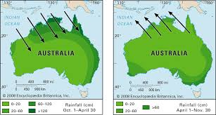
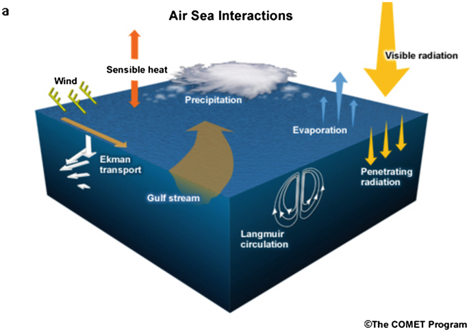
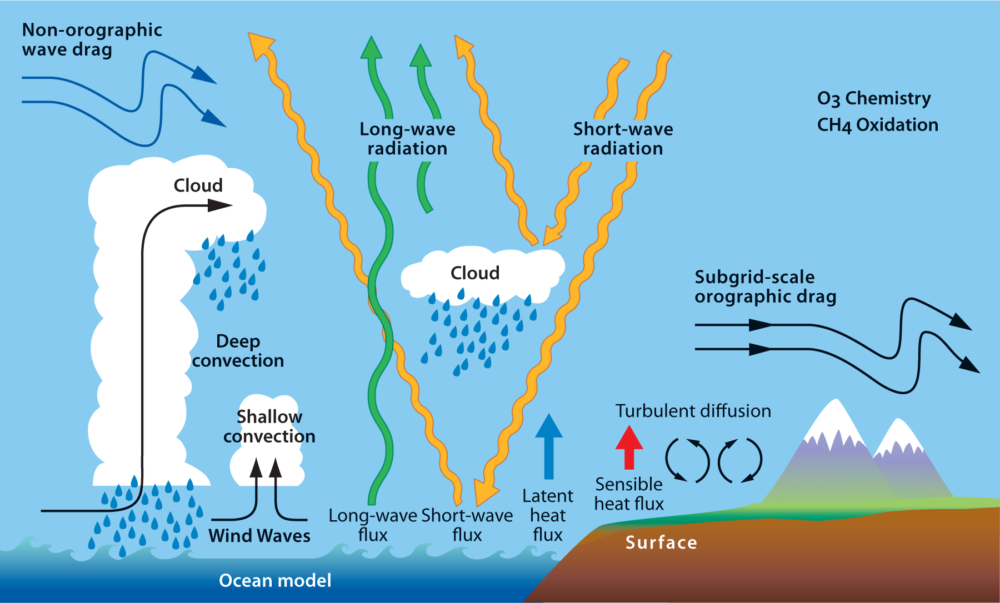
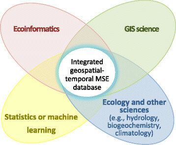
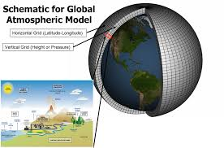

Research Interests
Monsoon Dynamics
Air-Sea Interaction
Atmospheric Dynamics
Statistical Climatology
Climate Modeling
Skills & Abilities
- Programming Languages: Python, MATLAB, NCL, FERRET, Basics of Fortran
- Application Software: CDO, NCO, Basics of ArcGIS, ERDAS IMAGINE, Origin, GnuPlot, Grapher, Corel, SigmaPlot, GIMP, DataGraph, QGIS
- Technical Skills: High-Performance Computing, Machine Learning, Parallel Computing
Publications
-
Mohanty, S., Singh, M. S., & Jakob, C. (2024).
"Australian Summer Monsoon: Reanalyses Versus Climate Models in Moist Static Energy Budget Evolution."
Journal of Geophysical Research: Atmospheres 129(12), e2023JD040162. -
Mohanty, S., Jakob, C., & Singh, M. S. (2024).
"Australian summer monsoon bursts: A moist static energy budget perspective."
Journal of Geophysical Research: Atmospheres, 129(1), e2023JD039048. -
Basu, S., Mohanty, S., & Sanyal, P. (2020).
"Possible role of warming on Indian summer monsoon precipitation over the north-central Indian subcontinent."
Hydrological Sciences Journal, 65(4), 660–670. -
Mohanty, S., Jakob, C., & Singh, M. S. (2025).
"The Moist Static Energy budget of Australian Summer Monsoon Bursts in Climate Models: Insights from Present and Warming Climate Scenarios."
(Submitted) -
Yang, Z., Narsey, S., Lo, M., Mohanty, S., Peel, M., & Ryu, D. (2025).
"Land-atmosphere Coupling Contributing to Anomalous Rainfall before the Onset of Australian Monsoon."
(Submitted) -
Mohanty, S., Garg, N., Ramesh, N., & Prakash, M. (2025).
"The compounding effects of heatwaves and precipitation bursts in northern Australia"
(Submitted) -
Mohanty, S. & Ramesh, N. (2025).
"Evaluating Fiji's Historical and Future Climate Using CMIP6 Models: Insights from Moisture and Moist Static Energy Budget."
(Preparation)
Research Experience
- PhD Thesis (January 2020 - October 2023): Australian Summer Monsoon: A Moist Static Energy Budget Perspective.
Guide: Prof. Christian Jakob, Dr. Martin Singh (Monash University, Melbourne). - MS Thesis (July 2018 - May 2019): Indian Monsoon Precipitation Variation; Role of Northern Indian Ocean Warming and increase in inter-ocean thermal gradient.
Guide: Prof. Prasanta Sanyal, Dr. C. Gnanaseelan (IISER Kolkata, India). - Project Assistant (July 2019 - December 2019): Indian Monsoon Precipitation variation; Role of surface and upper tropospheric temperature.
Guide: Prof. S.K. Mishra, Prof. S. Sahany (Indian Institute of Technology, Delhi, India). - Summer Project (June 2017 - August 2017): Long term analysis of Mixed Layer Heat Content in the Northern Indian Ocean and its effect on Indian summer and Winter monsoon.
Guide: Ms. Divya David (National Centre for Antarctic and Ocean Research (NCAOR), Ministry of Earth Science, Govt. Of India). - Summer Project (June 2016 - July 2016): An extensive analysis of heat content and salinity in the upper Arabian Sea and its effect on Indian Summer Monsoon Rainfall.
Guide: Dr. C. Gnanaseelan (ESSO-Indian Institute of Tropical Meteorology (IITM), Ministry of Earth Science, Govt. Of India).
Education
- Ph.D. in Atmospheric Science, Monash University, Melbourne, Australia (January 2020 - October 2023).
- BS-MS Dual Degree in Geoscience, Indian Institute of Science Education and Research (IISER), Kolkata, India. CGPA: 8.88/10 (Graduated 2018).
- 12th Grade, Upendranath Junior College, Soro, Odisha, India. Score: 81%.
- 10th Grade, Balukeswar High School, Soso-Kanpur, Odisha, India. Score: 90.2%.
Employment
- Postdoctoral Research Fellow (October 2024-Present, full-time): Coupled Vegetation-Mammal Dynamics: Modeling Climate Impacts on Mammal Evolution and Migration. IBS Centre for Climate Physics, South Korea.
- Climate Data Scientist (November 2023 - October 2024, full-time): Fidelity of CMIP6 models in assessing Fiji monsoon simulation through Analysis of Moisture, Moist static energy, and Circulation Budgets. Commonwealth Scientific and Industrial Research Organisation (CSIRO), Australian Government.
- Climate Data Scientist (April 2023 - October 2023, part-time): Climate Model Selection for the Climate Services for Agriculture’s Application Ready Data for Fiji using statistical downscaling applying machine learning approach, collaborating with the Fiji government. CSIRO, Australian Government.
Workshops & Conferences
- Presenter at EGU General Assembly, Vienna, 2023
- Participant in ARC Centre of Excellence for Climate Extremes workshop, 2023
- Participant in AMOS Annual Meeting, Adelaide, 2022
- Participant in ARC Centre of Excellence for Climate Extremes Winter School, 2022
- Participant in ARC Centre of Excellence for Climate Extremes Winter School, 2020
- Participant in General Assembly of European Geosciences Union (EGU), Vienna, Austria, 2019
- Participant in International Conference on Climate Change Impacts, Vulnerabilities, and Adaptation: Emphasis on India and Neighbourhood (CCIVA),
IIT Kharagpur, February 26 - March 2, 2019 - Participant in International Workshop on Land-Ocean-Atmosphere Interaction, Greenhouse Gases, and Coastal Processes,
organized by Centre for Climate and Environmental Studies, IISER Kolkata, July 25 - August 4, 2018
Research Presentations
- Oral Presentation (2023) at EGU General Assembly: "Australian summer monsoon bursts: A moist static energy budget perspective."
- Oral Presentation (2022) at AMOS: "Australian Summer Monsoon: Reanalyses vs. Climate Models in Moist Static Energy Budget Evolution."
- Poster Presentation (2019) at EGU General Assembly: "Increase in north-east monsoon precipitation by rapid Indian Ocean warming and a strengthening inter-ocean thermal gradient."
- Poster Presentation (2018) at IISER-Kolkata: "A stable isotopic approach to estimate the evapotranspiration contribution to hydrological cycle over coastal region of eastern India."
Awards & Scholarships
- Graduate Research Completion Award, Monash University (July 2023 - October 2023)
- Co-funded Monash Graduate Scholarship (January 2020 - July 2023)
- Deans International Postgraduate Research Scholarship, Monash University (January 2020 - October 2023)
- 2nd best MS thesis award in Department of Earth Sciences at IISER Kolkata (June 11, 2019)
- 2nd Prize in the oral presentation in technical session 1 (Ocean Dynamic and Processes) at CCIVA, 2019 (March 2, 2019)
- Selected for Innovation in Science Pursuit for Inspired Research (INSPIRE) fellowship by Department of Science Technology (DST), Government of India (January 2020 - December 2024)
- Selected for Innovation in Science Pursuit for Inspired Research (INSPIRE) Scholarship by Department of Science Technology (DST), Government of India (July 2014 - May 2019)
- Higher Education Scholarship (HE: MEDHABRUTI - JUNIOR) by Department of Higher Education (DHE), Odisha, India (2011-2013)
- Pathani Samanta Mathematics Scholarship by Department of Higher Education (DHE), Odisha, India (2011-2013)